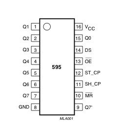

Learning Examples | Foundations | Hacking | Links
Serial to Parallel Shifting-Out with a 74HC595
Started by Carlyn Maw and Tom Igoe Nov, 06
Shifting Out & the 595 chip
At sometime or another you may run out of pins on your Arduino board and need to extend it with shift registers. This example is based on the 74HC595. The datasheet refers to the 74HC595 as an "8-bit serial-in, serial or parallel-out shift register with output latches; 3-state." In other words, you can use it to control 8 outputs at a time while only taking up a few pins on your microcontroller. You can link multiple registers together to extend your output even more. (Users may also wish to search for other driver chips with "595" or "596" in their part numbers, there are many. The STP16C596 for example will drive 16 LED's and eliminates the series resistors with built-in constant current sources.)
How this all works is through something called "synchronous serial communication," i.e. you can pulse one pin up and down thereby communicating a data byte to the register bit by bit. It's by pulsing second pin, the clock pin, that you delineate between bits. This is in contrast to using the "asynchronous serial communication" of the Serial.begin() function which relies on the sender and the receiver to be set independently to an agreed upon specified data rate. Once the whole byte is transmitted to the register the HIGH or LOW messages held in each bit get parceled out to each of the individual output pins. This is the "parallel output" part, having all the pins do what you want them to do all at once.
The "serial output" part of this component comes from its extra pin which can pass the serial information received from the microcontroller out again unchanged. This means you can transmit 16 bits in a row (2 bytes) and the first 8 will flow through the first register into the second register and be expressed there. You can learn to do that from the second example.
"3 states" refers to the fact that you can set the output pins as either high, low or "high impedance." Unlike the HIGH and LOW states, you can"t set pins to their high impedance state individually. You can only set the whole chip together. This is a pretty specialized thing to do -- Think of an LED array that might need to be controlled by completely different microcontrollers depending on a specific mode setting built into your project. Neither example takes advantage of this feature and you won"t usually need to worry about getting a chip that has it.
Here is a table explaining the pin-outs adapted from the Phillip's datasheet.
|  | PINS 1-7, 15 | Q0 " Q7 | Output Pins |
| PIN 8 | GND | Ground, Vss | |
| PIN 9 | Q7" | Serial Out | |
| PIN 10 | MR | Master Reclear, active low | |
| PIN 11 | SH_CP | Shift register clock pin | |
| PIN 12 | ST_CP | Storage register clock pin (latch pin) | |
| PIN 13 | OE | Output enable, active low | |
| PIN 14 | DS | Serial data input | |
| PIN 16 | Vcc | Positive supply voltage |
Example 1: One Shift Register
The first step is to extend your Arduino with one shift register.
The Circuit
1. Turning it on
Make the following connections:
- GND (pin 8) to ground,
- Vcc (pin 16) to 5V
- OE (pin 13) to ground
- MR (pin 10) to 5V
This set up makes all of the output pins active and addressable all the time. The one flaw of this set up is that you end up with the lights turning on to their last state or something arbitrary every time you first power up the circuit before the program starts to run. You can get around this by controlling the MR and OE pins from your Arduino board too, but this way will work and leave you with more open pins.
2. Connect to Arduino
- DS (pin 14) to Ardunio DigitalPin 11 (blue wire)
- SH_CP (pin 11) to to Ardunio DigitalPin 12 (yellow wire)
- ST_CP (pin 12) to Ardunio DigitalPin 8 (green wire)
From now on those will be refered to as the dataPin, the clockPin and the latchPin respectively. Notice the 0.1"f capacitor on the latchPin, if you have some flicker when the latch pin pulses you can use a capacitor to even it out.
3. Add 8 LEDs.
In this case you should connect the cathode (short pin) of each LED to a common ground, and the anode (long pin) of each LED to its respective shift register output pin. Using the shift register to supply power like this is called sourcing current. Some shift registers can't source current, they can only do what is called sinking current. If you have one of those it means you will have to flip the direction of the LEDs, putting the anodes directly to power and the cathodes (ground pins) to the shift register outputs. You should check the your specific datasheet if you aren"t using a 595 series chip. Don"t forget to add a 220-ohm resistor in series to protect the LEDs from being overloaded.

Circuit Diagram
The Code
Here are three code examples. The first is just some "hello world" code that simply outputs a byte value from 0 to 255. The second program lights one LED at a time. The third cycles through an array.

595 Logic Table

595 Timing Diagram
The code is based on two pieces of information in the datasheet: the timing diagram and the logic table. The logic table is what tells you that basically everything important happens on an up beat. When the clockPin goes from low to high, the shift register reads the state of the data pin. As the data gets shifted in it is saved in an internal memory register. When the latchPin goes from low to high the sent data gets moved from the shift registers aforementioned memory register into the output pins, lighting the LEDs.
Code Sample 1.1 Hello World
Code Sample 1.2 One by One
Code Sample 1.3 Two shift registers
Example 2
In this example you'll add a second shift register, doubling the number of output pins you have while still using the same number of pins from the Arduino.
The Circuit
1. Add a second shift register.
Starting from the previous example, you should put a second shift register on the board. It should have the same leads to power and ground.
2. Connect the 2 registers.
Two of these connections simply extend the same clock and latch signal from the Arduino to the second shift register (yellow and green wires). The blue wire is going from the serial out pin (pin 9) of the first shift register to the serial data input (pin 14) of the second register.
3. Add a second set of LEDs.
In this case I added green ones so when reading the code it is clear which byte is going to which set of LEDs

Circuit Diagram
The Code
Here again are three code samples. If you are curious, you might want to try the samples from the first example with this circuit set up just to see what happens.
Code Sample 2.1 Dual Binary Counters
There is only one extra line of code compared to the first code sample from Example 1. It sends out a second byte. This forces the first shift register, the one directly attached to the Arduino, to pass the first byte sent through to the second register, lighting the green LEDs. The second byte will then show up on the red LEDs.
Code Sample 2.2 2 Byte One By One
Comparing this code to the similar code from Example 1 you see that a little bit more has had to change. The blinkAll() function has been changed to the blinkAll_2Bytes() function to reflect the fact that now there are 16 LEDs to control. Also, in version 1 the pulsings of the latchPin were situated inside the subfunctions lightShiftPinA and lightShiftPinB(). Here they need to be moved back into the main loop to accommodate needing to run each subfunction twice in a row, once for the green LEDs and once for the red ones.
Code Sample 2.3 - Dual Defined Arrays
Like sample 2.2, sample 2.3 also takes advantage of the new blinkAll_2bytes() function. 2.3's big difference from sample 1.3 is only that instead of just a single variable called "data" and a single array called "dataArray" you have to have a dataRED, a dataGREEN, dataArrayRED, dataArrayGREEN defined up front. This means that line
data = dataArray[j];
becomes
dataRED = dataArrayRED[j];
dataGREEN = dataArrayGREEN[j];
and
shiftOut(dataPin, clockPin, data);
becomes
shiftOut(dataPin, clockPin, dataGREEN);
shiftOut(dataPin, clockPin, dataRED);